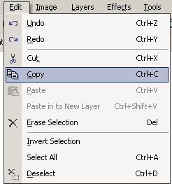

|
 In
order to use the Copy Operation (Edit-->Copy, or ctrl-C), you must
first select a portion of the layer using either the
Rectangle
Select or the
Lasso
Select. Once you execute the
Copy Operation, the selected region will be copied onto the clipboard for
future use. The
Cut
Operation on the other hand, will
remove the selection in addition to
copying. |